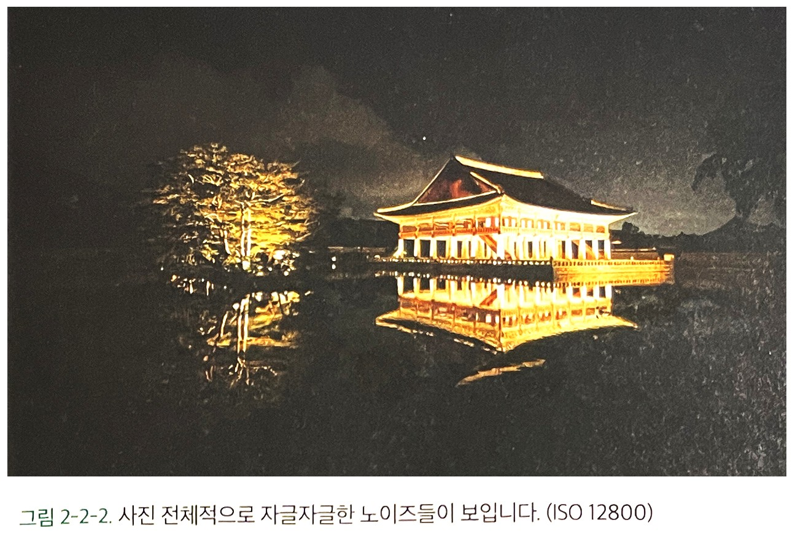
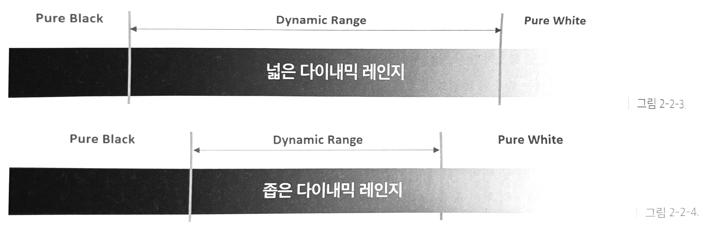
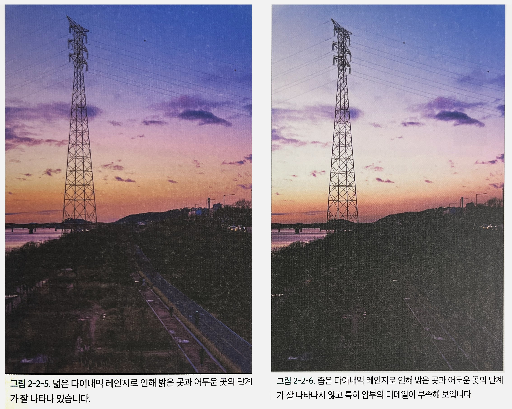
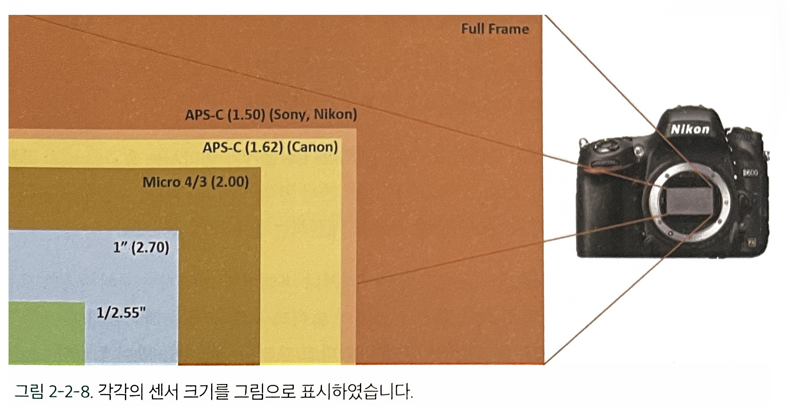
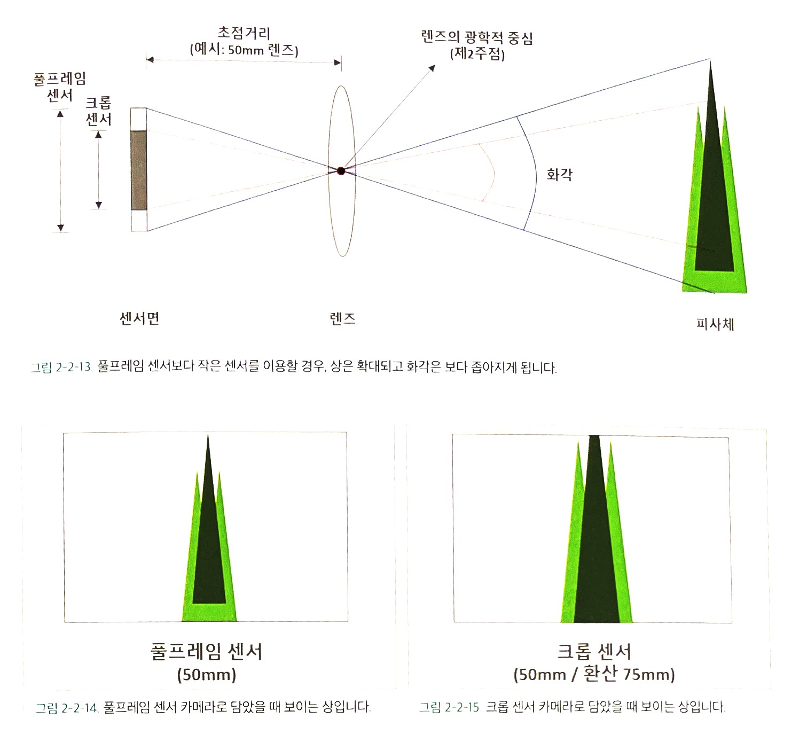

(Ⅰ) 4k모니터로 12백만 화 사진을 보는 경우
가로축에 3,840, 세로축에 2,160개의 픽셀을 표현할 수 있는 4K모니터로 본다면 한 화면에 표시할 수 있는 픽셀은 3840×2160=8,294,400이므로 12백만 사진을 원본 크기 그대로 볼 수 없다. 그래서 12백만 화소로 촬영한 사진을 화면에서 보려면 사진의 크기를 축소해야 한다. 4K 모니터가 아닌 Full HD 모니터는 1920×1080=2,073,600 이므로 더 큰 비율로 축소해야 하며 스마트폰이나 SNS로 보는 경우에는 그 축소 정도가 더 커지게 된다.
(Ⅱ) 200DPI 혹은 200DPI로 출력하는 경우
DPI는 Dot per Inch의 약자로 출력물의 가로세로 1인치당 얼마만큼의 점(Dot)이 들어 가는 가를 말한다. Dot가 인쇄물의 최소 단위라면 픽셀은 모니터와 같은 디스플레이에서의 최소단위이다. Dpi는 특정한 값이 정해진 것이 아니라 출력물의 게시 용도와 해당 출력물을 바라보는 사람과의 거리를 기준으로 정하게 된다.
12백만 화소를 가진 사진을 250DPI로 출력한다면 가로는 16인치(=4,000화소/250DPI), 세로는 12인치(=3000화소/250DPI)로 출력이 가능하다. 이를 센티미터로 환산하면 40cm×30cm크기의 출력물이 된다.
12백만 화소를 가진 사진을 250DPI로 출력한다면 가로는 16인치(=4,000화소/250DPI), 세로는 12인치(=3000화소/250DPI)로 출력이 가능하다. 이를 센티미터로 환산하면 40cm×30cm크기의 출력물이 된다.
200DPI는 250DPI에 비해 단위 면적당 점의 수가 좀 떨어지지만 상업적인 용도가 아닌 개인이 보고 즐기는 데는 크게 문제가 되지 않는다. 200DPI로 출력하면 가로는 20인치(=4000화소/200DPI), 세로는 15인치(3000화소/200DPI)로 출력이 가능하며, 이를 센티미터로 환산하면 50cm×38cm 크기가 된다.
즉, 12백만 화소의 사진은 긴 변의 길이가 40~50cm 정도 되는 사진을 출력할 수 있다. 요즈음 스마트폰도 1억화 소가 나오는 마당에 화소수로 너무 신경 쓰는 것은 아닐 것이다. 그렇다고 해서 12백만 화소면 충분하다는 것은 더더욱 아니다.
6천만 화소(가로 9000화소/ 세로 6750화소)를 가진 사진은 어떤가? 50DPI로 출력한다면 가로는 180인치(=9000화소/50DPI), 세로는 135인치(=6750화소/50DPI)로 출력할 수 있다. 미터로 환산하면 약 4.5m×3.5m 크기의 출력물인 된다. 화소가 늘어나면 큰 크기의 출력물을 만들 수 있음을 알 수 있다. 그렇다면 우리는 얼마만한 화소가 필요할까? 처음부터 대형 인화를 할 목적이 아니라면 2천만 화소도 차고 넘칠 것이다.
(Ⅲ) 카메라의 화소가 많아지면 화질이 좋아지는가?
앞서 언급했듯이 화소는 사진을 구성하는 하나의 점을 말하며, 화질은 여러 기준이 있지만 노이즈와 다이내믹 레인지를 들어 화질을 설명해 보기로 하자.
⓵ 노이즈(Noise) :
랜덤한 형태로 사진에 나타나는 입자모양의 패턴 노이즈의 종류에는 Photonic noise, Thermal noise 및 Transfer process nois 등이 있다. 노이즌 랜덤한 형태로 나타나는 것이 일반적이지만 경우에 따라서는 일정한 패컨을 지닌 노이즈도 발생할 수 있다.
그림 2-2-2 사진 전체적으로 많은 노이즈들이 보인다. (ISO 12800)
⓶ 다이내믹 레인지(Dynamic Range)
사진의 가장 밝은 부분과 가장 어두운 부분사이의 발기 변화를 수치화 한 것으로 다이내믹 레인지가 넓을수록 사진 보다 풍부한 톤과 디테일을 갖게 된다.
☞넓은 다이내믹 레인지
다이내믹 레인지 바깥의 영역은, 원래의 피사체에서 밝기의 차이가 있더라도 사진에서 순수한 검은색이나 흰색으로 표현된다.
☞☞좁은 다이내믹 레인지
다이내믹 레인지가 좁아지면 넓은 레인지에 비해 표현할 수 있는 밝기 변화의 단계가 상대적으로 줄어들기 때문에 암부나 명부의 디테일에서 손해를 본다.
 (Ⅳ) 판형의 종류
그림 2-2 각각의 센서 크기를 그림으로 표시하였다.
☞⓵ 풀프레임 센서(Full Frame)
36×24cm의 크기를 갖는 것으로 필름 카메라에서 사용하던 35mm 필름의 규격과 동일하다.
☞⓶ 크롭 센서(APS)
APS(Advanced Photo System)는 크롭 펙터(Crop Factor)라고 불리는 풀 프레임과의 크기 비율에 따라 다음과 같이 구분한다.
√ APS-H : 28.7×19.1mm~27.6×18.4mm. (크롭 펙터 : 약 1.25~1.30배)
√ APS-C : 22.7×15.1mm~23.3×15.5mm. (크롭 펙터 : 약 1.50~1.62배)
예로서 크롭 펙터 2이면, 풀 프레임과 비교해서 가로와 세로가 각각 1/2로 작으므로서 센서의 면적은 1/4을 가진다.
☞⓷ 마이크로 포서드(Micro 4/3’)
크롭 센서 보다 더 작은 약 17.3×13.0mm으로 이는 풀 프레임을 잘라서 만든 것이 아니므로 크롭 펙터라는 말이 어울리지 않으나 편의상 2배의 크롭 펙터를 가진다고 표현할 수 있다.
☞⓸ 1인치 센서
약 13.2×8.8mm의 크기로 크롭 펙터 2.7배의 크기를 가진다.
[참고문헌]
[1]라아트룸 클래식CC 사진보정 클래스 정현성, 비제이퍼블릭, 2020.12.29.
....
....
....
....
....
....